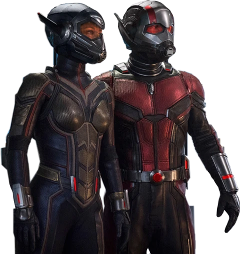

Ant-Man and the Wasp 2018


Full Name: Ant-Man and the Wasp
IMDb RATING: 7/10
Genre: Action, Adventure, Sci-Fi
Release Date:June 25, 2018 (USA)
Duration: 1h 58m
Director:Peyton Reed
Writer: Peyton Reed
Movie Plot:
Scott Lang is grappling with the consequences of his choices as both a superhero and a father. Approached by Hope van Dyne and Dr. Hank Pym, Lang must once again don the Ant-Man suit and fight alongside the Wasp. The urgent mission soon leads to secret revelations from the past as the dynamic duo finds itself in an epic battle against a powerful new enemy.
Cast

Paul Rudd
American actor
age 53 years

Evangeline Lilly
American actor
age 42 years
Michael Douglas
American actor
age 77 years

Hannah John-Kamen
American actor
age 32 years
Michael Peña
American actor
age 46 years
David Dastmalchian
American actor
age 46 years
T.I.
American actor
age 41 years

Abby Ryder Fortson
American actor
age 41 years

Bobby Cannavale
American actor
age 52 years